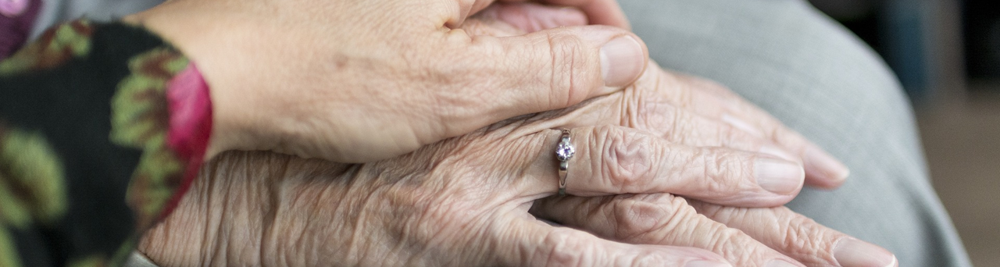
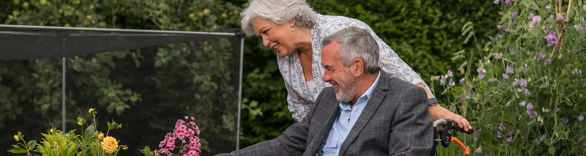

There is a need for prevention and sustainable homecare services so older adults can live and thrive in their environment. Existing prevention programs need to be included. Homecare services are plagued with several problems threatening the provision of home care. The purpose of homecare is to provide support in activities of daily living (ADL), social aspects and medical distribution. Nurse assistants and nurse aides are commonly employed within homecare in Sweden, and women in this cohort are overrepresented (less than 80%). The homecare staffs work independently and mostly by themselves, with limited collaboration with colleagues and managers as they perform their work in the homes of their clients. There is a lack of documented best practices for preventing older adults at risk for frailty and for offering a person-centred homecare service based on the needs and preserved abilities of the older adult.
In the forthcoming estimate, we know there will be an increased number of older adults but at the same time that the access to the share of professionals will decrease Therefore, is a demand for a strategic plan for this shift. As the world population is rapidly ageing, age-related diseases pose a challenge for individuals, families, and social, economic, and healthcare systems. By 2050, the world population aged 60 years and older is expected to be over 2 billion, rapidly growing from 900 million in 2015. As well as the over 80 years will also increase with 50 % until 2029. With the ageing process, several physiological changes occur and the risk of developing chronic diseases, disability, and dependency increases. Instead of focusing on the treatment of specific diseases, changes in the health systems are mandatory to prevent functional decline and impairment and focus on guaranteeing healthy ageing. It is crucial for older adults to participate in everyday activities at home and in society to ensure physical, social, and mental well-being.
FRAILITY AND PREVENTION
Frailty is a health state defined as a progressive age-related decline in physiological systems that results in decreased reserves of intrinsic capacity, which confers extreme vulnerability to stressors and increases the risk of adverse health outcomes (WHO). Intrinsic capacity is a composite of all the physical and mental attributes an individual can draw on at any time. Functional capacity is the combination and interaction of the intrinsic capacity with the environment. Cesari et al suggest that the definition of intrinsic capacity could be further divided into five different domains: cognition, psychological (mood and sociality), sensory function (vision and hearing), vitality (i.e., the balance between energy intake and consumption), and locomotion including muscular function. However, it should be remembered that these five separate domains have a dynamic interaction with each other. Frailty focuses on function and not specifically on diseases. The estimated prevalence of frailty among older adults (+65 years) is 7–12%. Frailty is a significant public health concern with substantial implications for the health and well-being of the older population. Studies identifying evidence of physiological dysregulation underlying frailty offer clues into potential strategies for preventing and slowing frailty onset. Work to further develop this evidence and the public health approaches to compress frailty and morbidity into as narrow a span of end-life as possible are urgently needed. To date, several factors have been identified as risks of frailty among community-dwelling older adults. In general, older age, women, low educational level, sedentary lifestyle, obesity, underweight, cognitive impairment, and comorbidities are associated with the development of frailty. Increasing evidence shows that frailty is potentially reversible with early screening and interventions, including physical activity, a complete nutritional evaluation, reducing inappropriate drug prescription and preserving emotional vitality.
This research program defines Healthy Ageing as the process of developing and maintaining the functional ability that enables wellbeing in older age. Central to the conceptualisation of Healthy Ageing is an understanding that neither the intrinsic capacity nor functional ability remains as a constant state. Both tend to decline with increasing age. It is suggested that empowerment, that is believing that you have the power to change your own circumstances, can be achieved through a person-centred approach. In the direction of respond to these different challenges due to frailty priority must be given to person-centred and empowering everyday strategies for the older adults as well as the significant others.
To continue to live at home there might be a need for prevention and support to ensure safety and promote a personally healthy and meaningful life at home for as long as possible with respect for dignity and well-being. The future forecast for the delivery of healthcare services in Sweden suggests the development of more flexible care, with a focus on outpatient care and homecare. In parallel, care needs to correspond to both the needs and requirements of care recipients, including increased involvement in the developing new interventions using technology. However, social, economic and health care systems can impede the possibility to influence matters related to personally meaningful and engaging everyday activities and life.
INFORMAL CARER / CARE PARTNERS
Older adults with decreased intrinsic capacity often need support to carry out everyday activities. “Dear child has many names”, is usually said, and it fits the sphere of society outside the public organization, but which is also not part of the ordinary business life or people's immediate family circle. In this application, we use informal carer or care partners as the person that often needs to provide this support and becomes informal caregiver. Due to the cost-effectiveness and dyads' (older adults and their care partners) preference, the focus of the care model is shifting from institutions to home settings. Global estimates of informal dementia care at home were over 2,000 hours per year or six hours per day, corresponding to full-time employees' working hours, suggesting that in-homecare significantly affects care partners' lives.
When the older adult’s dependency increases due to frailty, so do the burden of care. Notably, living with a frail person could provide an extensive amount of unpaid care, from basic personal activities of daily living (ADL; bathing, dressing, getting in and out of bed/chair, walking, toileting, and eating) to instrumental activities of daily living (IADL; shopping, preparing food, taking medication, using transport, and managing personal finances) depending on the levels of cognitive and physical function of the older adults. This in turn can for the carers lead to reduced physical- and mental health, losing balance in participating in activities in everyday life, social isolations, and a reduced quality of life and well-being.
The informal carer/care partner plays a vital role in caring, but their efforts are often overlooked 30. The need for support to this group to have them cope with the responsibility of caring for a loved one and at the same time caring for themselves is unknown. Hence, it is of importance to understand the different factors of how a person’s dependency influences the well-being of the informal caregiver/care partner and as even more important how could they be supported in care but also in their everyday life. Including this group closer in the care and prevention of older adults at risk for frailty or in a state of frailty is needed. Also, since a declined frailty often in the end the result in removal from the home environment to institutional care that are costly, largely ineffective, and that can have serious adverse effects. Though care partners provide the bulk of care, relatively little research has been done on developing affordable, accessible, practical tools to assist them in managing challenges in everyday life. Most evidence-based interventions to support the informal carers/care partners require in-person training from skilled professionals that can be expensive and time-intensive. Furthermore, such services are often unavailable in the communities where they live. For example, the predominant focus has been on interventions with people living with cognitive decline as dementia and much less attention has been paid to the ways in which technology can be deployed to mitigate the physical and emotional impact on their informal carers/care partners.
SPECIALISED SERVICE AT HOME-TECHNOLOGY AND AGEING
Technology-supported interventions could allow older adults to age in place and stay in their homes. Prolonging the period during which home-based residence is feasible holds personal, societal, and financial benefits while aligning with Swedish national healthcare policy. But doing so successfully involves supporting the older adult and the significant others/ informal care givers and care partners. The technology can also help new ways of working by developing work methods and implementing welfare technology. Research has shown that education in using the internet and computers can reduce loneliness among older people.
This program includes questions about the role of welfare technology in older adults’ life and whether and how this technology can promote active and healthy ageing. Also, questions about whether and how welfare technology affects the situation and conditions for the significant others and care partners in a broad sense are important. To enable the implementation of new working approaches, a model is needed for staff, older adults and the health care services ready for implementation of prevention- and homecare (including a reablement approach) services using digital technology. In this program, the interventions have also been tested with various welfare technologies in previous pilot studies, which will now be further developed and investigated to obtain this model.